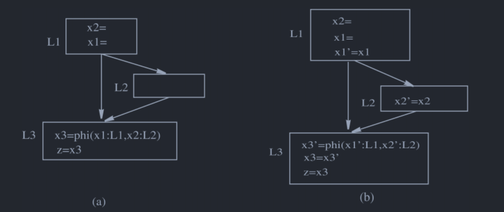
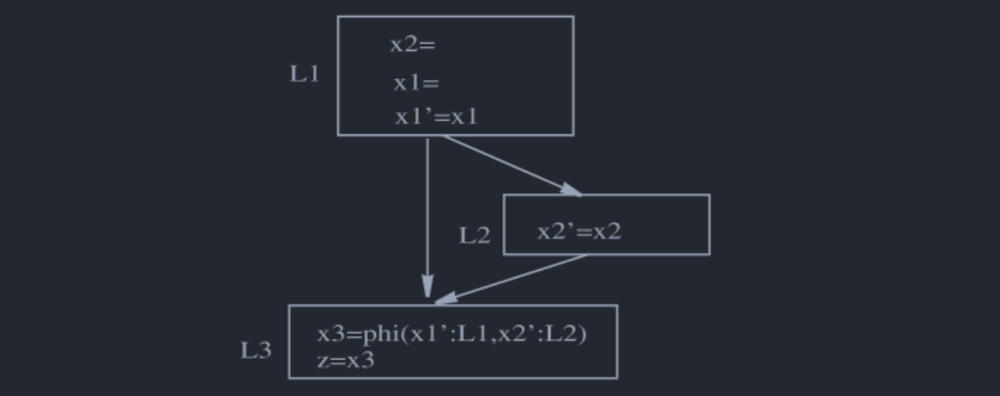
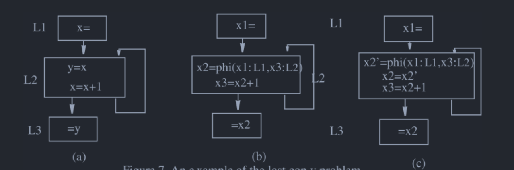
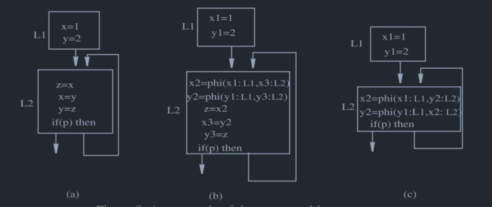
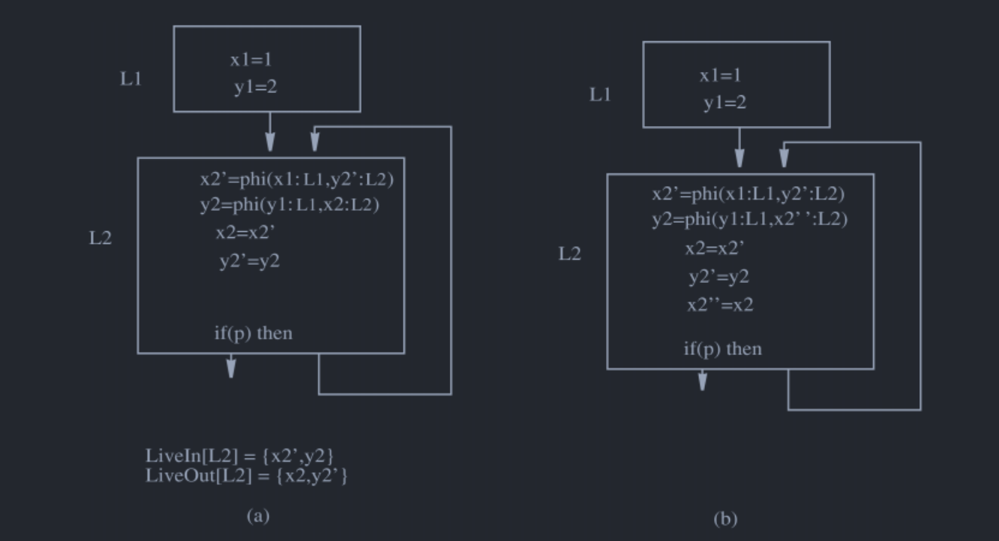
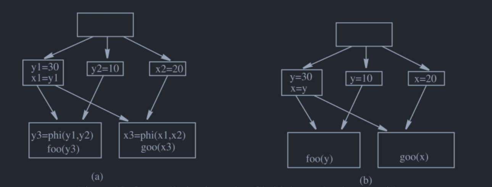

静态单赋值形式（2）
在静态单赋值形式（1）中提到还有其他的方式能够解决消除\(\phi\)函数，这里就进行介绍。要介绍的内容主要来自Sreedhar et al.的论文[1]，主要内容包括：
- Phi Congruence Class的概念。
- TSSA和CSSA的概念。
- 如何将TSSA转为CSSA。
Phi Congruence Class
Phi Congruence Class就是被\(\phi\)函数连接的变量的集合，如果一个\(\phi\)函数结点有\(x_0 \gets \phi(x_1,x_2,x_3)\)，那么有集合\(S=\{x_0,x_1,x_2,x_3\}\)，这个集合元素都在同一个Phi Congruence Class中。\(\phi\)函数对变量的连接关系是可以传递的，也就是说，有\(x_0 \gets \phi(x_1,x_2,y_1)\)和\(y_0 \gets \phi(y_1,y_2)\)这样两个\(\phi\)函数结点，那么有集合\(S=\{x_0,x_1,x_2,y_0,y_1,y_2\}\)，其中元素都属于同一个Phi Congruence Class。
本文种用phiCongruenceClass[x]表示与变量x同在一个Phi Congruence Class的变量的集合，这个集合包括了x自己。注意，如果变量\(x\)未被任何的\(\phi\)结点引用（作为source或者是target），那么为空集。
CSSA 和 TSSA
先说两个名字什么意思，CSSA即Conventional SSA，感觉应该可以翻译为常规SSA；TSSA即Transformed SSA，转换后的SSA。
如果SSA满足每个变量和同属于一个Phi Congruence Class的其他变量不产生冲突，那么这样的SSA就是CSSA，这里的冲突指的是活跃区间上的冲突，也就是活跃区间不能发生重叠。
如果一个IR是CSSA形式的，同在一个Phi Congruence Class的变量之间不存在冲突。如果IR是CSSA形式的，那么可以通过将所有的同在一个Phi Congruence Class的变量分配同一个名字来消除掉所有的\(\phi\)函数。按照静态单赋值形式（1）讲到的方法得到的SSA是满足CSSA要求的，如下图Fig 1所示。
而TSSA则不能这么做，Fig 2是一个TSSA的例子，其中同在一个Phi Congruence Class的变量之间发生了冲突，如果将同一个Phi Congruence Class的变量替换为同样的名字，则会产生错误。
定义phi结点有关变量的活跃性
如Fig 3中，可以假定\(x_1\)和\(x_2\)属于对应前驱基本块的LiveOut集合，但是被\(\phi\)函数引用，不能算是被使用了。
那么为什么不让\(x1\)和\(x2\)在\(L3\)的开头处被使用呢？原因是如果两个变量在一个地方被使用的话，那么无论如何都是冲突的，而事实上这种冲突完全是没有必要的，因为我们最后消除\(\phi\)函数的时候事实上是将copy指令插入到对应的前驱基本块的末尾，而不是放在定义了\(\phi\)函数的开头。除此之外，还需要假定有\(x3 \in LiveIn(L3)\)，需要这么做的原因和处理Lost-Copy Problem和Swap Problem有关。
在做了这些特殊处理之后，使用普通的数据流算法对LiveIn、LiveOut和冲突图进行计算就行了。
从TSSA转为CSSA
文中一共介绍了3种将TSSA转换为CSSA的方法。先对这三种方法的结果和性能就行比较再来说说具体是如何做的。
插入一个copy指令事实上是将变量从其本身的Phi Congruence Class移除出去，比如\(x'\gets x\)，让x从phiCongruenceClass[x]中去除掉，\(x'\)代替了\(x\)的位置。
第一种方式
第一种是最为直接的方式，如Fig 4，给每个phi函数中的参数对应的前驱的末尾加上对应的copy指令，同时，在\(\phi\)函数的后面也加入一个copy指令。同时，生成的新变量，只会用在\(\phi\)函数中。这样确实可以保证同一个Phi Congruence Class内部不会发生冲突，但是这样也会插入很多多余的copy指令，Fig 4(b)中仅有\(x2'=x2\)是必要的，其他的copy指令都可以去除。

第二种方式
第二种方法借助了冲突图来对copy指令的插入进行引导。只有当在同一个\(\phi\)函数的的变量出现了冲突才会插入copy指令，这种情况下将，为生成两个copy指令，涉及冲突的都要插入copy指令，插入的方法和第一种中是一样的，对Fig 4(a)的转换结果为Fig 5。

虽然减少了一条copy，不过\(x1'=x1\)仍是多余的，由于在\(L1\)插入了\(x2'=x2\)，因此\(x2\)已经被移除出了原本的phiCongruenceClass，用于替换\(x2\)的\(x2'\)不会和\(x1\)有冲突，这是因为\(x1\notin LiveOut(L2)\)，所以和\(x2'\)使用同样的名字不是问题。
注意，这里并没有使用phiCongruenceClass，而是对phi-node进行的而处理。
第三种方式
上面提到过为什么Fig 5中的\(x1'=x1\)是多余的，可以利用这个观察，同时使用冲突图和活跃性信息对copy指令插入进行引导。这里给出Fig 4(a)中的LiveOut信息，\(LiveOut(L1)=\{x1,x2\}\)，\(LiveOut(L2)=\{x2\}\)。
如果在一个\(\phi\)函数结点的参数之间（假设是\(x_i\)和\(x_j\)，它们对应前驱分别是\(B_i\)和\(B_j\)）发生了冲突（在处理的\(\phi\)函数的目标的时候同时也会需要LiveIn信息，具体如何使用见后面），根据\(LiveOut(B_i)\)、\(LiveOut(B_j)\)的情况那么一共可以分为四种情况进行讨论
注意，这下面使用的是\(phiCongruenceClass[x_i]\)而非\(x_i\)，虽然一开始\(phiCongruenceClass[x_i]=\{x_i\}\)，但是每处理一个\(\phi\)结点会进行一次phiCongruenceClass的更新。
第一种，\(phiCongruenceClass[x_i] \cap LiveOut(x_j) = \emptyset\)且\(phiCongruenceClass[x_j] \cap LiveOut(x_i) \neq \emptyset\)。在\(B_i\)结尾插入一条\(x_i' \gets x_i\)，这么做的原因已经说过了。
第二种，\(phiCongruenceClass[x_i] \cap LiveOut(x_j) \neq \emptyset\)且\(phiCongruenceClass[x_j] \cap LiveOut(x_i) = \emptyset\)。是第一种情况的对称，所以是类似的在\(B_j\)结尾插入一条\(x_j' \gets x_j\)。
第三者，\(phiCongruenceClass[x_i] \cap LiveOut(x_j) \neq \emptyset\)且\(phiCongruenceClass[x_j] \cap LiveOut(x_i) \neq \emptyset\)，需要在\(B_i\)结尾处插入一条\(x_i' \gets x_i\)同时在\(B_j\)结尾插入一条\(x_j' \gets x_j\)。需要插入两条copy指令的原因是，以\(x_i\)为例，即使插入了\(x_i' \gets x_i\)，依旧会让\(x'_i\)和\(x_j\)冲突，因为两者同时在\(B_i\)的结尾处是活跃的，类似的只插入\(x_j' \gets x_j\)也不行。
第四种，\(phiCongruenceClass[x_i] \cap LiveOut(x_j) = \emptyset\)且\(phiCongruenceClass[x_j] \cap LiveOut(x_i) = \emptyset\)，这种情况下，虽然\(x_i\)和\(x_j\)是冲突的，但是从Phi Congruence Class中移除任意一个都可以解决问题。
虽然在第四种情况中，虽然插入任意一个copy指令都能够解决问题，但是还是可能产生多余的copy指令，所以需要对copy指令的插入进行延后，直到\(\phi\)结点中所有冲突都被处理了之后再来进行实际的插入。因为要等到所有冲突被处理完之后再实际地进行插入，那么，上面提到的插入其实只是进行一个记录candidateResourceSet中，而不是实际进行插入。
具体来说，如果在一个\(\phi\)结点中，\(x1:L1\)和\(x_2:L2\)出现了冲突，满足情况4，在L1末尾插入\(x1' = x1\)或者在L2末尾插入\(x2'=x2\)都可以，同时接下来的冲突导致了必须要在\(L2\)末尾插入\(x2'=x2\)，那么之前的copy指令是可以省略的。所以在处理情况4的时候需要进行记录，如果是\(x1:L1\)和\(x_2:L2\)出现了冲突，那么将\(x_2\)加入到\(unresolvedNeighborMap[x_1]\)集合，将\(x_1\)加入到\(unresolvedNeighborMap[x_2]\)集合。之后按照unresolvedNeighborMap集合的大小进行排序，从大到小，如果\(unresolvedNeighborMap[x_i] \neq \emptyset\)，那么将\(x_i\)放入上面说的记录candidateResourceSet中，在加入之后需要将\(x_i\)进行删除，如果candidateResourceSet已经出现了对应的，那么也进行移除，所以需要对照着candidateResourceSet进行处理。
也就是说，由于在candidateResourceSet中会存在\(x2\)，所以，会被从unresolvedNeighborMap中删去，而引用也会被删去，所以，就不会产生多余的copy指令了。
在完整的算法中进行插入逻辑位于code.txt中的insertCopy，观众可以去code.txt文件中进行查看。
The Lost-Copy Problem 和 The Swap Problem
来看看这个算法对于解决这两个问题的效果如何，同时看看当\(\phi\)函数的target和source产生冲突的时候，如何进行处理。
The Lost-Copy Problem
先来看The Lost-Copy Problem，[1]中给出了一个例子：

其中(a)是转为SSA之前的代码，(b)是转为SSA并进行了复制折叠的代码，(c)是按照之前算法进行处理后的代码。
查看\(x2 = phi (x1:L1, X3:L2)\)的时候能够看出来，\(x2\)由于在\(L3\)中仍然被引用，所以，有\(x2\in LiveOut(L2)\)，由于\(x2\)是个target，所以有\(x2\in LiveIn(L2)\)，而\(x3 \notin LiveIn(L2)\)，所以插入是\(x2=x2'\)，而且插入的位置是\(\phi\)结点下面并将原本的\(x2 = phi (x1:L1, X3:L2)\)替换为\(x2' = phi (x1:L1, X3:L2)\)。
这里的情况和第一种或者第二种是类似的，只是与target相联系的不是前驱的LiveOut，而是当前块的LiveIn，同时插入copy指令的方法有不同。
The Swap Problem
[1]中给出了一个例子：

其中(a)是转为SSA之前的代码，(b)是转为SSA的代码，(c)是进行了复制折叠的代码。
首先对第一个\(\phi\)结点进行考察，发现\(x2\)和\(y2\)是冲突的，而且，\(x2\)是一个target，所以需要比较\(LiveOut(L2)=\{x2,y2\}\)和\(LiveIn(L2)=\{x2,y2\}\)，依据上面的第三种情况，可以知道需要插入两条copy语句，进行了插入之后的结果如Fig 6(a)。

在插入了两条copy语句后，对冲突图、基本块的LiveIn和LiveOut都进行了更新，不过第二个\(\phi\)结点中，同一个Phi Congruence Class的\(y2\)和\(x2\)仍旧是冲突的。所以按照之前的思路进行处理，最后得到Fig 6(b)。
完整的算法
将论文中原文复制过来，进行了排版整理，见同目录下文件code.txt，并不打算进行讲解了。
我感觉这种算法要比在静态单赋值形式（1）中提到的要好，主要的原因就是因为这种方法更加统一，没有特别地处理The Lost-Copy Problem和The Swap Problem，而且能够更少地插入copy指令。
利用Phi Congruence Class进行合并（Coalescing）
考虑图中的情况，由于出现了活跃区间的冲突，所以使用类似在图着色寄存器分配中提到的算法无法消除这种复制。但是，其实可以看出来\(x1=y1\)是可以被去除的，也就是用\(y1\)代替\(x1\)的出现并不会有问题，替换的算法在静态单赋值形式（1）中提到了，使用类似的方法就行，将Fig 7(a)替换后的结果如Fig 8所示。


但是借助Phi Congruence Class的性质却可以处理这种复制语句，具体来说，从Fig 8的结果来看，虽然Phi Congruence Class变为了\(S=\{y_1,y_2,y_3,x_2,x_3\}\)，但是如果没有导致\(S\)内的变量发生冲突，就可以去除掉\(x1=y1\)。
在考虑一个复制语句\(x=y\)时，根据\(phiCongruenceClass[x]\)和\(phiCongruenceClass[y]\)的关系有四种情况。
第一种，\(phiCongruenceClass[x] = \{\}\)且\(phiCongruenceClass[y]=\{\}\)，合并之后也时空的，所以可以删除\(x=y\)。
第二种，\(phiCongruenceClass[x] = \{\}\)且\(phiCongruenceClass[y] \neq \{\}\)，如果\(x\)和\(phiCongruenceClass[y] - y\)中元素冲突，就不可以删除\(x=y\)，反之可以。
第三种，\(phiCongruenceClass[x] \neq \{\}\)且\(phiCongruenceClass[y]=\{\}\)，是上面一种情况的对称，所以也是类似的。
第四种，\(phiCongruenceClass[x] \neq \{\}\)且\(phiCongruenceClass[y] \neq \{\}\)，那么对于\(phiCongruenceClass[x]-x\)和\(phiCongruenceClass[y] -y\)之间的任意一对变量不能存在冲突，如果存在则无法去除\(x=y\)，反之可以。
注意，如果两者本身就在同一个phiCongruenceClass，而且时CSSA，那么可以直接删除\(x=y\)。
引用
[1] V. C. Sreedhar, R. D.-C. Ju, D. M. Gillies和V. Santhanam, 《Translating Out of Static Single Assignment Form》, 收入 Static Analysis, 卷 1694, A. Cortesi和G. Filé, 编 Berlin, Heidelberg: Springer Berlin Heidelberg, 1999, 页 194–210. doi: 10.1007/3-540-48294-6_13.